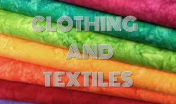

A student admired beautiful clothes and wondered how fashion designers transformed simple ideas into outfits worn around the world. What started as curiosity became a passion for design, creativity, and fashion. Clothing & Textiles opens the door to understanding fabrics, garment construction, and the business of fashion.
Clothing & Textiles is the study of fabrics, fashion design, garment construction, textile production, and clothing management. It combines creativity, practical skills, and entrepreneurship.
As an SHS student, you may study topics such as:
Clothing & Textiles can lead to careers such as:
Many students think Clothing & Textiles is only about sewing. In reality, it is a global industry involving design, manufacturing, branding, marketing, retail, technology, and entrepreneurship. Some of the world's biggest brands were built from fashion ideas.
This is only a small introduction. If you want to understand how programmes connect to university courses, careers, opportunities, and future success, get a copy of:
The guide designed to help students make informed decisions about their future and discover opportunities they may never have considered.